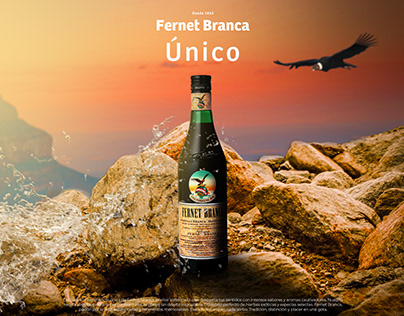

Fernet Branca
Milán, Italia · 1845
Del laboratorio de un boticario al vaso de toda Argentina
Origen
El Fernet nació en 1845 cuando Bernardino Branca, boticario milanés, desarrolló una mezcla de hierbas maceradas en alcohol que servía como remedio contra el cólera y problemas digestivos. Su colaborador, el "Doctor Fernet", habría cedido la receta a la familia Branca.
El origen del nombre tiene varias teorías: algunos dicen que "fer net" en dialecto milanés significa "hierro pulido", por la placa de hierro caliente usada para preparar la bebida. Otros apuntan a la combinación de los apellidos de sus creadores.
La fórmula completa es un secreto comercial guardado en una caja fuerte, transmitido de generación en generación. Solo 5 de los 27 ingredientes son conocidos únicamente por el miembro activo de la familia Branca, quien los mezcla en soledad.
La bebida llegó a Argentina con la gran oleada de inmigrantes italianos. El éxito fue tal que en 1941 Fratelli Branca instaló su primera fábrica en Parque Patricios —la única destilería de la marca fuera de Italia en el mundo.

Cronología
Bernardino Branca elabora la receta original y funda Fratelli Branca Distillerie en Corso Porta Nuova, con más de 300 empleados.
La empresa Hofer de Buenos Aires obtiene la concesión exclusiva e importa el extracto desde Italia.
Se publica el primer aviso de Fernet Branca en el diario milanés "La Perseveranza".
Comienza la producción de almanaques con artistas reconocidos: Amisani, Metlicovitz, Mauzan, entre otros.
El logo del águila con la botella aparece por primera vez. Diseñado por Leopoldo Metlicovitz, sigue siendo el emblema de la marca.
Dino Branca asume y comienza a exportar formalmente a Argentina, Nueva York y Suiza.
Fratelli Branca instala su primera planta en Parque Patricios. Es la única destilería de la marca fuera de Italia.
Inspirada (según la leyenda) en el cóctel que preparaba la soprano María Callas antes de salir al escenario.
La mezcla se populariza en Argentina, especialmente en Córdoba, convirtiéndose en ícono cultural nacional.
Inversión de 15 millones de dólares para construir la planta actual en Buenos Aires.
Argentina campeona. El "viajero" (Fernet con Coca en vaso descartable) se vuelve viral globalmente.
Campaña mundialista de Fernet Branca junto a Zurda Agency, abrazando la intensidad argentina como identidad de marca.
Marketing
Mercado
Argentina consume más del 75% de todo el Fernet Branca producido en el mundo. La categoría mueve más de 60 millones de litros por año, siendo la 3ª bebida alcohólica más consumida en el país.
Economía
En 2012 una botella de 750ml costaba $49 ARS. En julio 2025 llegó a $14.200 ARS (≈10,92 USD) — un aumento del 1.690% en poco más de una década.
Segmentos de mercado
Fact check
Datos
Cultura
Asociación por escenas
Fernet Branca
Análisis estratégico
Competencia
Fernet Branca controla el 70% de la facturación y el 55% del volumen total del mercado argentino.
| Marca | Empresa | Segmento | Market share | Diferencial |
|---|---|---|---|---|
| Fernet Branca | Fratelli Branca | Premium | ~55% | Fórmula secreta de 180 años. Símbolo cultural argentino. |
| Vittone | Fratelli Branca | Medio | ~21% | Precio accesible. Distribuido por la propia Branca. |
| Capri | Pernod Ricard | Medio | ~12% | Dosificador, buen precio. Fuerte entre jóvenes de 18-25. |
| Fernet 1882 | Porta + Cepas | Regional | ~7% | Raíces cordobesas, innovó con formato en lata. |
| Ramazzotti | Pernod Ricard | Premium | ~3% | Origen italiano de 1815. Apunta al público "cool" y diferente. |
| Buhero Negro | Pernod Ricard | Artesanal | Nicho | 22 botánicos artesanales. Apunta al segmento gourmet. |
| Chola | Tato Giovannoni | Artesanal | Nicho | +40 hierbas andinas. Coctelería premium y cultura del altiplano. |
Audiencia